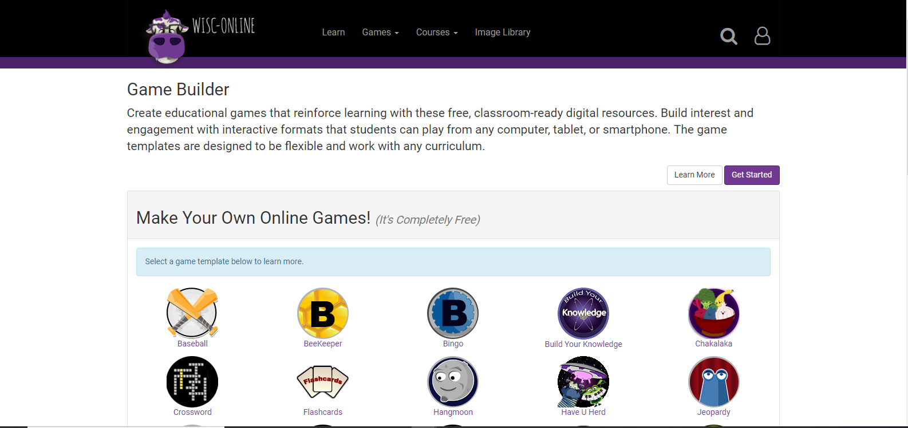

For my project, I am focusing on the C&C (Creativity and Cognition) and Transformational Creativity as a starting point for my project. Overall, my idea is to have a place where creative ideas related to subjects even more creative subjects, that will be explored by what I picture to be a younger audience. I will be a multi-step project in which the young person would come up with an idea to develop a project, and publish it to the page. There, they will be connected to a professional that can help develop the web app, and put it into a section of the creative collection. Ultimately, the main goal would be to have a standard apps for them to build their template app from, and then continue to to develop it with their mentor if necessary. My main idea is an artistically innovative educational site that is interactive with a younger audience, to encourage creativity within themselves. Here is some examples of my inspirations:
WISC-Online (Game Builder)
This game is similar to my idea because it involves creating templates for the user to build off of. The important point in this is it allows for creative development within the audience, while giving them something to build off of. This also resembles my idea through the audience that it is trying to reach, which a younger field for educational purposes. However, the big difference between my site and this site would be its subject matter, as my site would take a more of artistically creative subjects rather than things such as English, Math, or Science.
Design Buzz

This is where this website comes in, as its subject matter and overall platform reflects what I see my creative blog becoming. My ultimate goal will this would be to explore the different platforms of design and use it in an interactive format. This is where the similarities end, as it becomes less about interaction and more about static designs.